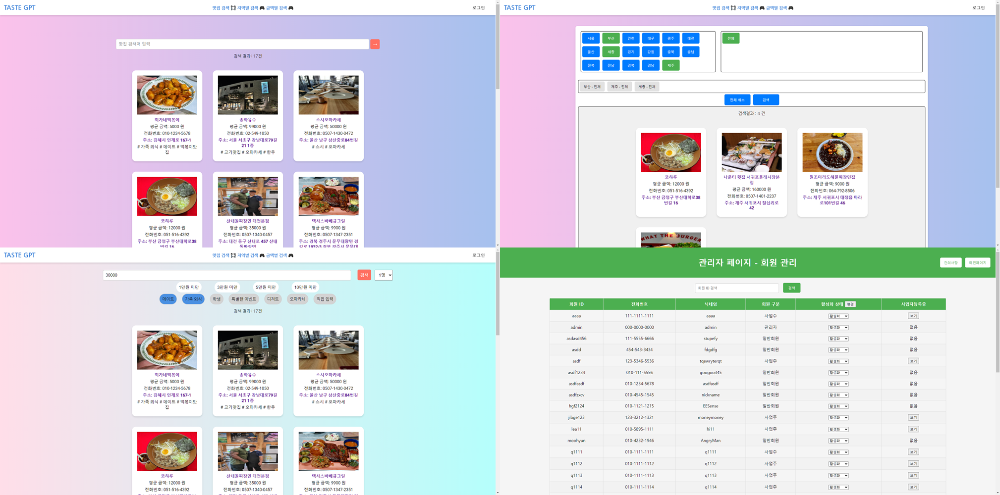

EnjoyFood - 맛집 추천 서비스
예산과 선호 카테고리에 따라 맛집을 추천하는 웹 기반 플랫폼
프로젝트 개요
이 프로젝트는 사용자의 예산과 조건에 따라 최적의 맛집을 추천하고,
Kakao 지도와 연동된 시각적 정보 제공 기능을 갖춘 맛집 추천 플랫폼입니다.
사용자는 카테고리 및 가격 조건을 조합하여 실제 방문 가능한 매장을 손쉽게 찾을 수 있습니다.
주요 기능
- 사용자 기능 : 로그인/회원가입, 맛집 검색, 리뷰 작성 및 평가
- 사업주 기능 : 맛집 등록, 메뉴 및 이미지 관리
- 지도 연동 : Kakao 지도 API를 통한 매장 위치 시각화
- 예산 검색 : 사용자 입력 예산에 맞는 가게 필터링 기능
- 관리자 기능 : 사용자 관리 및 사업자 등록증 검토
사용 기술
Java
JSP
Servlet
MyBatis
MySQL
Kakao Map API
JSTL
DBCP2
- 백엔드 : JSP + Servlet 기반 MVC 아키텍처
- DB : MySQL, MyBatis ORM 연동
- 프론트엔드 : HTML, CSS, JSTL, Kakao API
- 연결 : DBCP2 기반 커넥션 풀 관리
개발 절차 및 방법론
- 기획 회의를 통해 유저/가게/리뷰 흐름 정의
- ERD 작성 후 MyBatis 매퍼 설계 및 연동
- 가게 검색 로직 및 카카오 지도 연동 구현
- 카테고리/예산 필터를 통한 추천 알고리즘 구현
- 서블릿별 기능 모듈화 및 JSP 기반 화면 구성
내 역할
- 전체 JSP/Servlet 아키텍처 설계 및 개발
- 예산 필터링 및 맛집 추천 로직 구현
- Kakao 지도 연동 및 주소 좌표 변환 처리
- 리뷰 기능 구현 및 평점 집계 자동화
- 사업주 페이지 및 관리자 제어 기능 개발